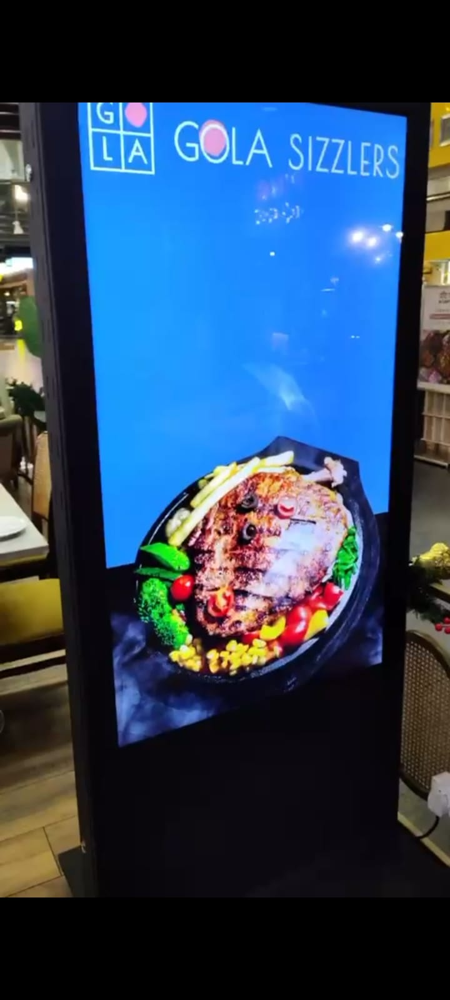
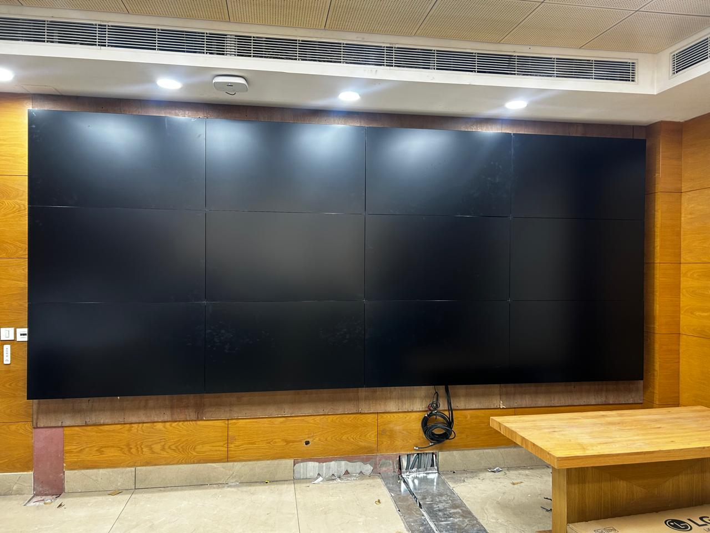
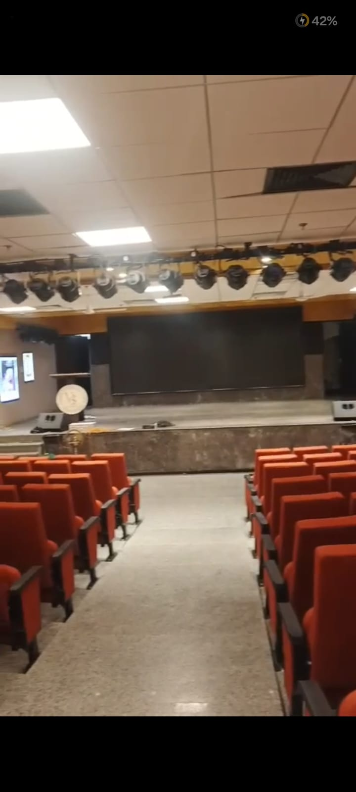
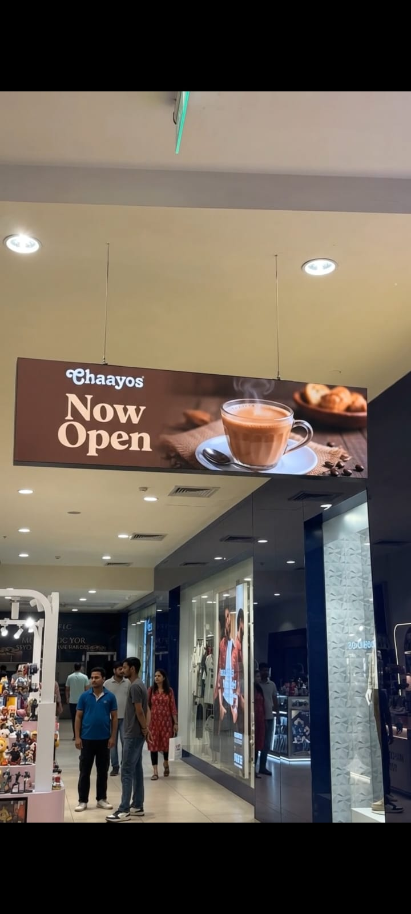
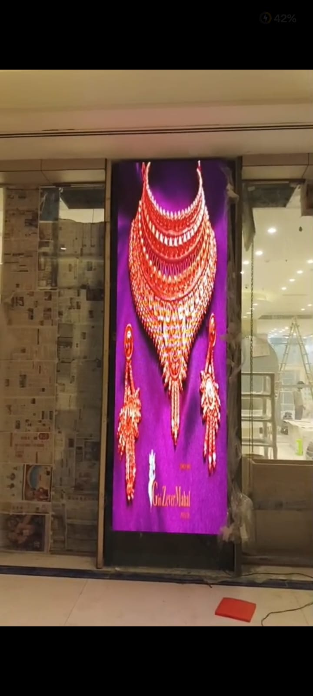
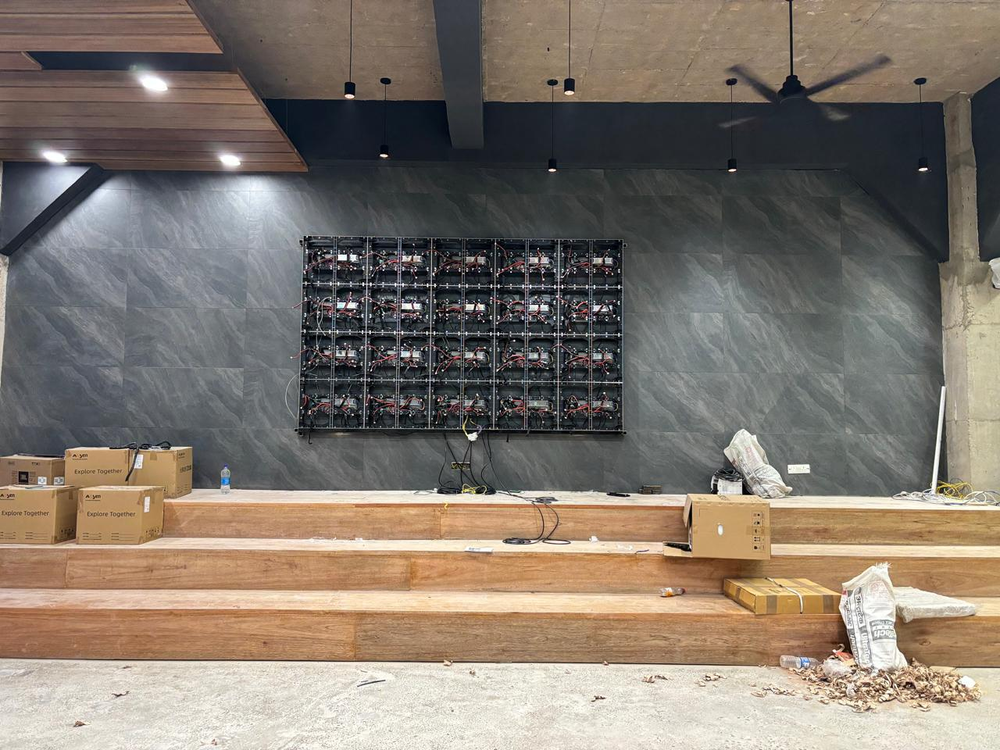

Indoor fine-pitch LED
For boardrooms, lobbies, auditoriums, experience centers and premium corporate display environments.

Active LED Wall Supplier & Installer
GPSPL plans indoor and outdoor LED display systems around pixel pitch, viewing distance, brightness, cabinet access, controller workflow, power, mounting structure, calibration and AMC support.
Supply + Design + Integrate + Support
A professional LED wall decision starts with the room, audience distance, content type, ambient light, mounting surface, service access, controller workflow and support expectation, not only screen size.
 Absen
Absen Samsung
Samsung LG
LG ATEN
ATENFor boardrooms, lobbies, auditoriums, experience centers and premium corporate display environments.
For public-facing communication where brightness, weather readiness, structure and service access matter.
LED controllers, processors, source switching, mapping and content workflow are planned before handover.
Alignment, color uniformity, spare planning, cabinet access and preventive maintenance reduce downtime.
Engineering Checks
These checks prevent oversized pixel pitch, weak brightness, poor alignment, difficult maintenance and hidden installation cost surprises.
Pixel pitch is selected from practical viewing distance and content readability so the display looks sharp without unnecessary over-specification.
Indoor, semi-outdoor and outdoor environments need different brightness, contrast, heat and weather-readiness planning.
Cabinet size, flatness, front or rear service access, wall strength and mounting structure are checked before finalizing the layout.
Sending cards, receiving cards, processor capacity, screen mapping and source workflow are matched to the final wall resolution.
Power distribution, data cabling, redundancy expectation, ventilation and cable service routes are included in planning.
Brightness, color, alignment, content testing, user handover and AMC readiness are treated as part of the display solution.
Enterprise LED Wall Consulting
Many buyers start an LED wall requirement by asking for a size and an approximate rate. That is understandable, but it is not enough for a professional installation. A good active LED wall must be specified around the distance from which people will view it, the type of content that will run on it, the amount of ambient light in the space, the quality expectation of the audience, the wall or structure that will carry it, the power and signal routes available at site, and the service access required after installation.
GPSPL treats the LED wall as an engineered visual system. For a corporate lobby, the priority may be premium brand impact and clean content playback. For an auditorium, the priority may be large-format visibility, refresh rate and reliability during events. For a command center, the priority may be source switching, resolution, uptime and service access. For an outdoor display, brightness, weather readiness, structure, electrical load and safety become critical. These differences directly affect the choice of pixel pitch, cabinet type, controller, processor, mounting method, cabling and maintenance plan.
The goal is not to recommend the most expensive LED wall. The goal is to recommend the right LED wall. Overspecifying pixel pitch can increase budget unnecessarily. Underspecifying brightness can make the screen look weak in a bright environment. Poor cabinet access can make future service expensive. Weak processor planning can create content scaling issues. Incomplete power and signal planning can delay installation. GPSPL's role is to help buyers understand these decisions before a final BOQ is frozen.
Specification Framework
These parameters help buyers compare LED wall proposals more intelligently. Two proposals may look similar by screen size, but the engineering quality can be very different.
Pixel pitch controls how fine the LED pixels are. A finer pitch can improve close-viewing quality, but it also increases cost. For a lobby where viewers stand close, finer pitch may be justified. For a large auditorium or outdoor screen viewed from a distance, a larger pitch may deliver the required experience at a more sensible cost. GPSPL evaluates the closest and farthest viewing distance before recommending the pitch direction.
Indoor meeting spaces, retail areas, glass-front lobbies, semi-outdoor zones and outdoor installations have different brightness requirements. A screen that looks bright in a controlled indoor environment may look dull in daylight. Brightness must be considered with content type, viewing angle, heat, power consumption and eye comfort.
Cabinet architecture affects alignment, depth, structure, installation method and maintenance. Front-service cabinets may be required where rear access is not possible. Rear-service layouts may be suitable where a service corridor exists. This decision should be made before civil, interior or mounting work is finalized.
The controller and processor are responsible for mapping the content correctly to the wall. They must support the final resolution, aspect ratio, refresh expectation, source types and operating workflow. A lobby signage screen, a presentation wall and a command center wall may need very different source handling.
LED walls need planned power load, proper distribution, clean signal cabling, safe routes and access for future troubleshooting. This is especially important for large walls, high-brightness outdoor screens and installations at height. Electrical readiness should be reviewed before installation commitment.
After installation, the wall needs visual checking, alignment, brightness and color adjustment, content playback testing and handover. Spare modules, warranty handling and AMC planning should be discussed early so the buyer understands how the display will be supported after go-live.
Solution Scope
GPSPL can support the complete LED wall scope or selected stages only: product supply, structure coordination, installation, processor setup, calibration, commissioning and AMC.
Use-Case Fit
GPSPL helps buyers avoid paying for the wrong LED configuration by matching the specification to the application.
Prioritizes clean visuals, content readability, cabinet finish, media workflow and service access.
Prioritizes size, brightness, viewing distance, refresh rate, processor workflow and show reliability.
Prioritizes resolution, processor mapping, source routing, uptime, redundancy expectation and serviceability.
Prioritizes brightness, weather protection, mounting structure, heat, electrical readiness and maintenance access.
Project Gallery
These project visuals show different LED and large-format display applications: corporate rooms, retail areas, atrium displays, menu boards, auditorium environments and installation-ready display walls.










Delivery Process
A professional LED wall project needs coordination between buyer, site team, electrical team, interior or civil team, product team and installation team.
We identify the application, audience, viewing distance, content type, location, size expectation, timeline and support requirement.
We review wall condition, structure, access path, installation height, cable route, power availability and service access expectation.
We propose the LED wall direction around pixel pitch, brightness, cabinet type, processor, controller and mounting approach.
The BOQ separates display hardware, controller, processor, structure, cabling, installation, calibration, commissioning and AMC scope.
Cabinets, structure, power, data, alignment and screen mapping are coordinated so the final display is stable and serviceable.
The wall is checked for alignment, content mapping, brightness, color, source playback and operating workflow before handover.
Risk Prevention
Many LED wall problems are not visible in a short product quotation. They appear later during installation, content playback, service or daily operation. GPSPL's planning approach is designed to reduce these hidden risks before the buyer commits.
Choosing pixel pitch without viewing distance can either waste budget or make content look coarse.
Bright lobbies, glass areas and outdoor spaces need realistic brightness planning, not generic indoor assumptions.
If cabinet access is ignored, future maintenance becomes difficult, slow and expensive.
Processor mismatch can cause scaling issues, source limitations and poor content workflow.
Power load, distribution, cable path and safety must be coordinated before installation starts.
LED walls need planned support, spare strategy and preventive checks for reliable long-term use.
Commercial and BOQ Basis
A serious LED wall quote should not show only a screen rate. Buyers should be able to understand the display hardware, controller, processor, mounting, power, signal cabling, installation, calibration and support scope separately. This makes the proposal easier to compare and reduces misunderstanding during project execution.
GPSPL recommends treating the LED wall BOQ as a complete delivery scope. The display cabinet and module selection is one part. The support structure, power distribution, data cabling, video processor, sending and receiving card architecture, media source, control workflow, calibration and service plan are equally important. If these items are not clarified at quote stage, the project may look cheaper initially but become expensive or delayed during installation.
For enterprise buyers, the final commercial should also clarify warranty terms, spare strategy, installation timeline, site readiness assumptions, AMC availability and exclusions. Site survey is strongly recommended before freezing the final model and price because wall strength, installation height, electrical readiness, access path, cable route, source location and content workflow can change the actual implementation effort. This protects the client from vague scope, hidden variation and avoidable downtime.
Why It Helps
GPSPL supports product shortlisting, cabinet planning, structure coordination, installation scope, processor setup, calibration, commissioning, warranty coordination and AMC readiness.
Request Site ReviewBuyer Questions
Pixel pitch depends on viewing distance, wall size, content type and budget. Closer viewing usually needs finer pitch; far-viewing halls and outdoor spaces can use larger pitch if it still meets readability needs.
Major factors include pixel pitch, cabinet type, brightness, screen size, controller and processor requirement, mounting structure, power distribution, cabling, installation complexity, calibration and AMC scope.
Yes. GPSPL can support cabinet mounting, cable routing, controller setup, screen mapping, brightness and color calibration, testing, commissioning and handover.
LED walls require long-term maintenance. Front or rear access, spare modules, controller access and safe working space can directly affect downtime and service cost.
RFQ Checklist
Share these details and GPSPL can recommend the right pixel pitch, wall size, controller, installation scope and support plan.
Application and location
Viewing distance
Wall size and structure
Content source
Site readiness
Service and AMC needs
Buying Guidance
Avoid these frequent pitfalls when planning, sourcing, and installing enterprise technology systems.
Mounting heavy steel active LED framing onto standard gypsum drywall without structural weight checks.
Choosing a pixel pitch that is too large for close-up viewing, causing severe eye strain for users.
Installing LED panels flush to walls without magnetic front service tools, making module swaps extremely difficult.
Powering sensitive high-capacity LED control cards directly from raw mains, leading to blown diodes during voltage spikes.
Target Sectors
GPSPL delivers integrated technology across multiple business and educational verticals.
Get a Faster Quote
To help GPSPL engineers recommend the right product models and prepare a precise site-survey-backed BOQ, please share the following details when contacting us: